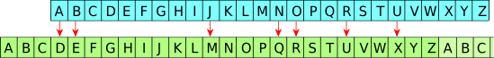

Chiffrement de Vigenère#
Quelques définitions#
Cryptographie
La cryptographie est un ensemble de procédés et de techniques qui permet de rendre un message incompréhensible pour en conserver le secret. Les techniques utilisées s’appuient sur des algorithmes et des clefs de chiffrement.
Cryptanalyse
La cryptanalyse est un ensemble de procédés et de techniques qui permet de déchiffrer un message sans avoir connaissance des clefs de chiffrement.
Chiffrer
Rendre un message incompréhensible en utilisant des clefs de chiffrement et des algorithmes de cryptage.
Déchiffrer
Rendre un message compréhensible, dans la forme avant chiffrement en utilisant des clefs de déchiffrement et des algorithmes.
Le chiffrement de César#
Le chiffrement de César est l’un des plus connu, dû à l’Histoire romaine et son auteur, l’empereur César. Pour conserver le secret de ses messages, César a fait chiffrer ses messages par un moyen qui aujourd’hui est très rudimentaire.
Principe
Le procédé de chiffrement consiste à remplacer une lettre de l’alphabet par une autre. Par exemple, en remplaçant le A par D, le B par E, …, le W par Z puis en reprenant au début de l’alphabet, le X par A, Y par B et Z par C comme le montre l’exemple ci-après:
Exemple
Le chiffrement de César avec une clef de valeur 3.
Ce qui donne un chiffrement du mot BONJOUR en ERQMRXU.
Déchiffrement
Le déchiffrement consiste à remplacer les lettres en effectuant un décalage opposé. L’algorithme de chiffrement et déchiffrement ne déplace pas les lettres contrairement à notre approche visuel ou graphique.
Il faut se replacer dans un contexte numérique, dans lequel, chaque lettre de l’alphabet est codé en binaire. Dans la table ASCII ou unicode, les lettres de l’alphabet sont codées sur un octet.
Par exemple, la lettre A est codé \(65\) soit \(0100 0001\) en binaire, la lettre B est codée \(66\) soit \(0100 0010\) en binaire, …
Pour effectuer un décalage de 3 rangs dans l’alphabet, cela revient à ajouter 3 soit \(0011\) à toutes les lettres.
La lettre
Asera codé par la lettre de valeur 68 soit leD,la lettre
Bsera codée par la valeur 69 soit leE,…
Pour reprendre le mot BONJOUR, il est codé 66 79 78 74 85 82 et sera chiffré en 69 82 81 77 88 85.
Le déchiffrement consiste donc à réaliser une soustraction de la valeur 3 aux valeurs des lettres.
On en conclut que la valeur de la clef de déchiffrement est égale à \(-3\).
Robustesse
On comprend aisément que ce chiffrement n’est pas robuste. Il suffit de tester , au pire, 25 combinaisons pour déchiffrer un message ce qui est très rapide pour un ordinateur.
Le chiffrement de Vigenère#
Principe
Le chiffrement de Vigenère date du XVI siècle et reprend le chiffrement de César en faisant varier la clef de chiffrement sur plusieurs caractères, et non plus un seul. On parle dans ce cas d’un mot clef de chiffrement. Cette clef sera répétée autant de fois que la longueur du message à chiffrer le nécessite.
Exemple
Prenons comme clef de chiffrement le mot NSI.
À chaque fois qu’une lettre du message est placée au dessus du N, celle ci sera chiffrée en posant un décalage de A à N, B à O, C à P, etc.
À chaque fois qu’une lettre du message est placée au dessus du S, celle ci sera chiffrée en posant un décalage de A à S, B à T, C à U, etc.
Enfin, à chaque fois qu’une lettre du message est placée au dessus du I, celle ci sera chiffrée en posant un décalage de A à I, B à J, C à K, etc.
On illustre ces décalages par la figure suivante:
Le mot BONJOUR sera donc chiffré en OGVWGCE
Déchiffrement et robustesse
Comme le chiffrement de César, il faut réaliser les décalages opposés pour chaque lettre constituant le mot clef.
Plus difficile à déchiffrer que le chiffrement de César, il a résisté assez longtemps aux cryptanalistes (3 siècles environ) mais aujourd’hui un tel chiffrement ne résisterait pas très longtemps à un ordinateur et aux propriétés arithmétiques connues.